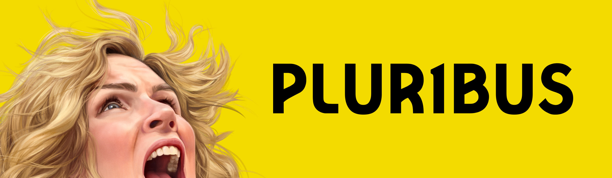
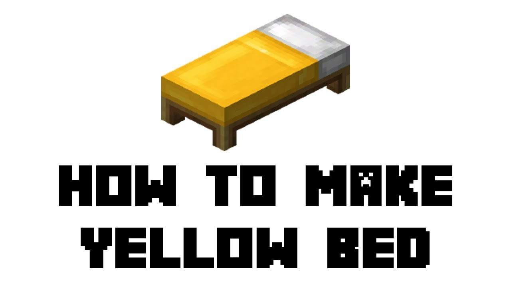

Pluribus
Pluribus é uma série que a identidade visual usa bastante a cor amarela e por isso que eu gosto
E também porque tem a Rhea Seehorn (⸝⸝⸝O﹏ O⸝⸝⸝)

Sol
esse aqui eu to roubando porque o sol não é necessariamente amarelo, mas parece que é então decidi colocar, o sol é muito legal porque ilumina e tals, o calor é bom mas às vezes esquenta muito daí não gosto (ᵕ—ᴗ—)
Girassol
Girassol é uma planta legal ◝(ᵔᗜᵔ)◜ porque ela gira em direção ao sol, e isso é muito interessante, eu gosto de girassóis
Estrela Amarela que eu só usei uma vez na página principal e daí queria usar ela de novo porque eu achei ela bonitinha

☢ Símbolo Nuclear ☢
O símbolo nuclear é muito doido porque é simples e muio memorável, e claro, ele tem a cor amarela em praticamente metade do símbolo (não medi mas é bem perto disso), enfim, muito triste que acidentes nucleares acontecem, mas acontce né, aff
Cama Amarela do Minecraft
A Cama amarela do mine é muito maneira porque ela tem a cor amarela. Como nem todo mundo sabe que ela existe (um absurdo!!!) vou deixar abaixo um link de um vídeo explicando como que se faz uma no jogo

Javascript
javacript é a melhor linguagem que existe, ele é simples e fácil de aprender, e dá pra fazer um monte de coisas legais com ela, tipo esse site, enfim, todo mundo gosta dela, e realmente ela é muito prática de usar e por ela ter sido criadda pra web, quase nunca dá problema, enfim, a logo dela é amarela, só podia ser né